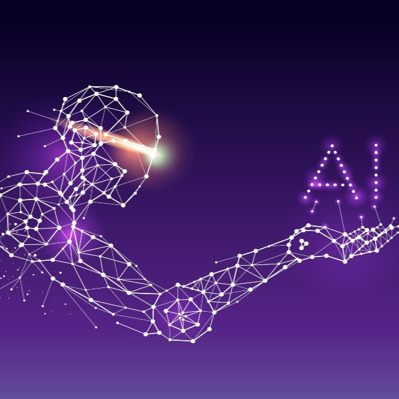

الذكاء الاصطناعي أو الـ AI اختصارًا هو مصطلح يشكّل مظلّة للعديد من التقنيات التي تتيح للآلات أن تحاكي الذكاء البشري.
|
 |
ببساطة فإنّ التعلّم الآلي يشكّل جزءًا فرعيًا من منظومة الذكاء الاصطناعي، ويعبّر عن قدرة الآلة على التفكير دون أن تكون مبرمجة خارجيًا. كيف ذلك؟
|